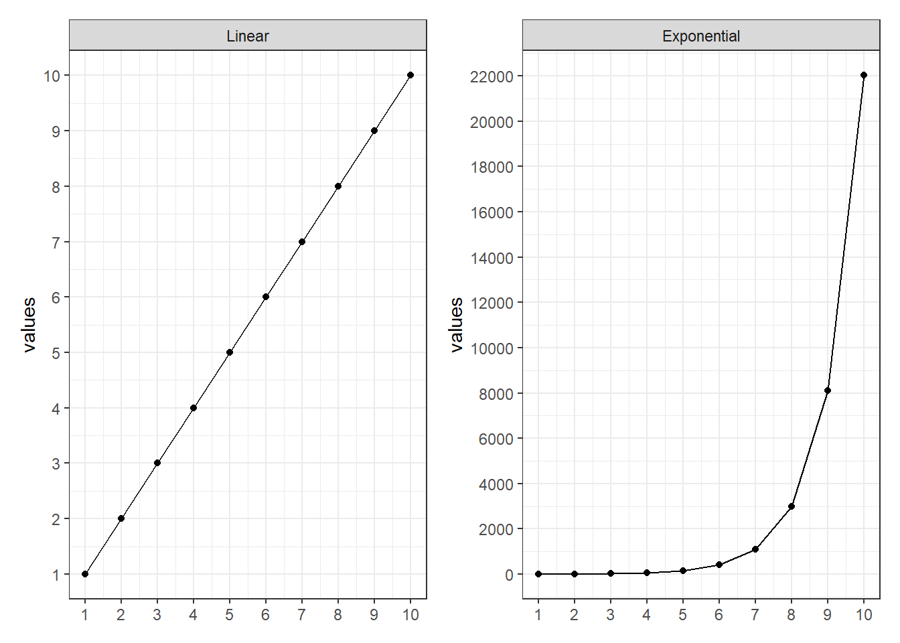
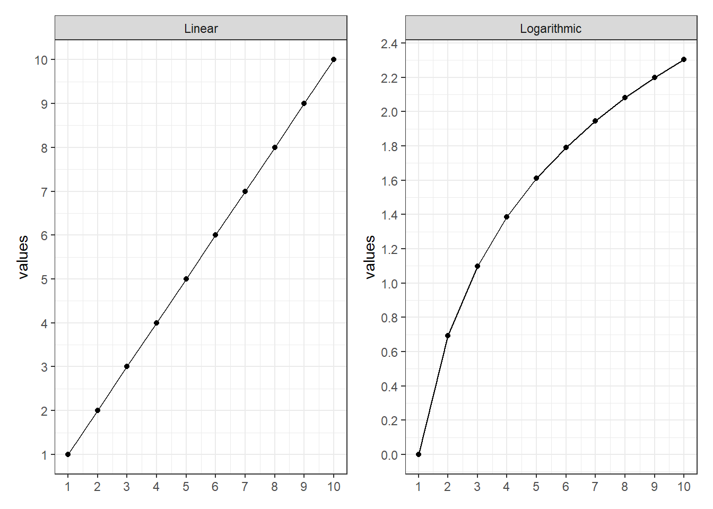
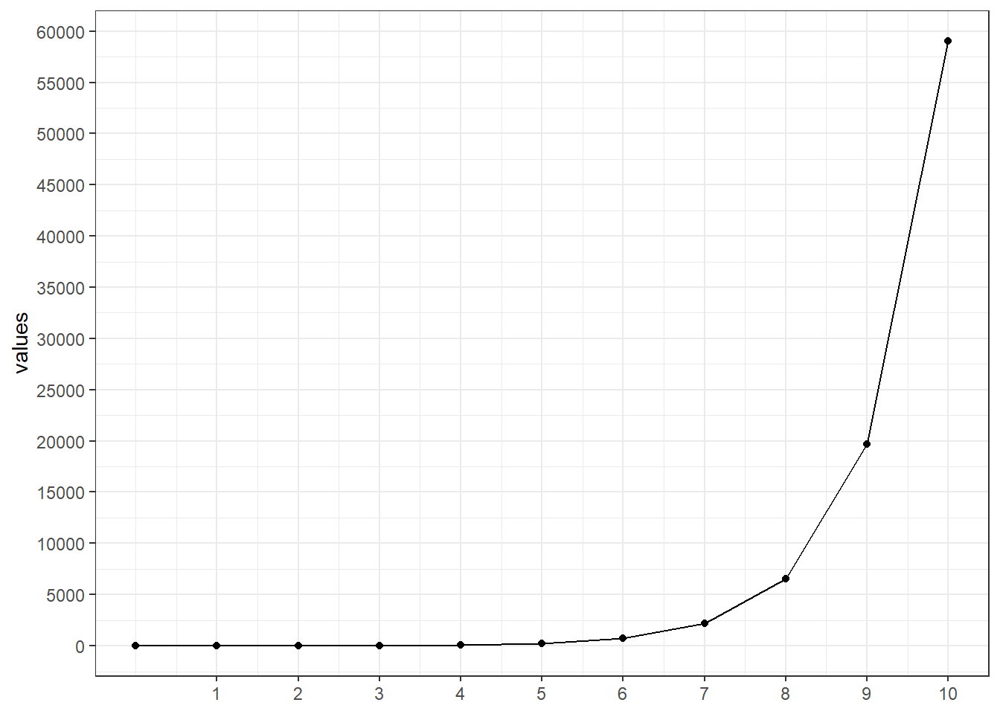
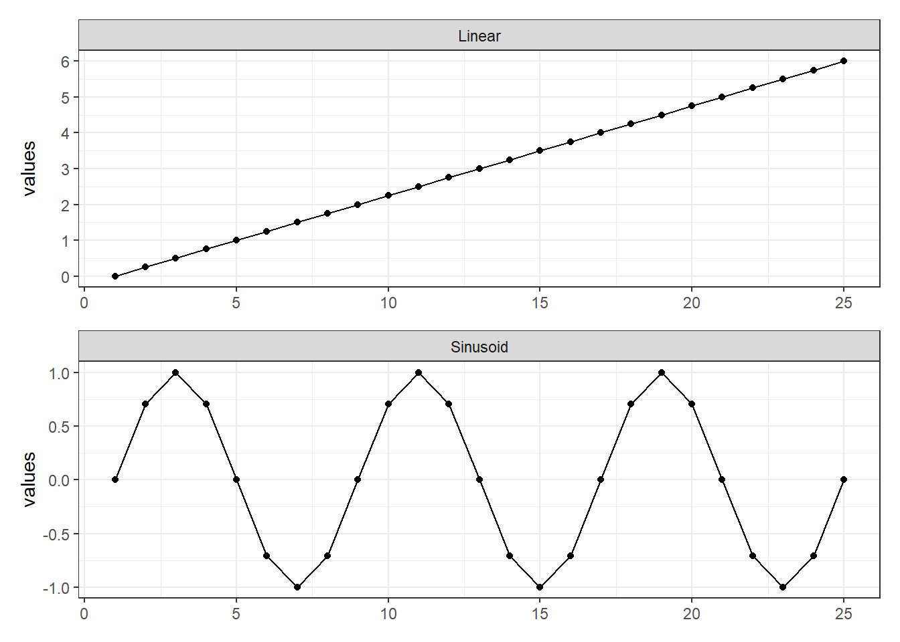
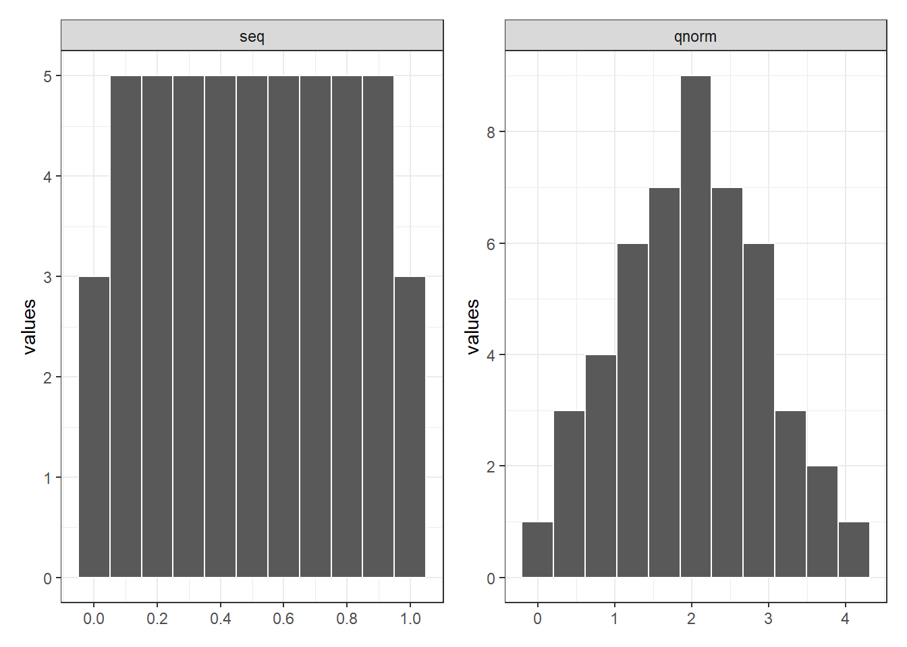
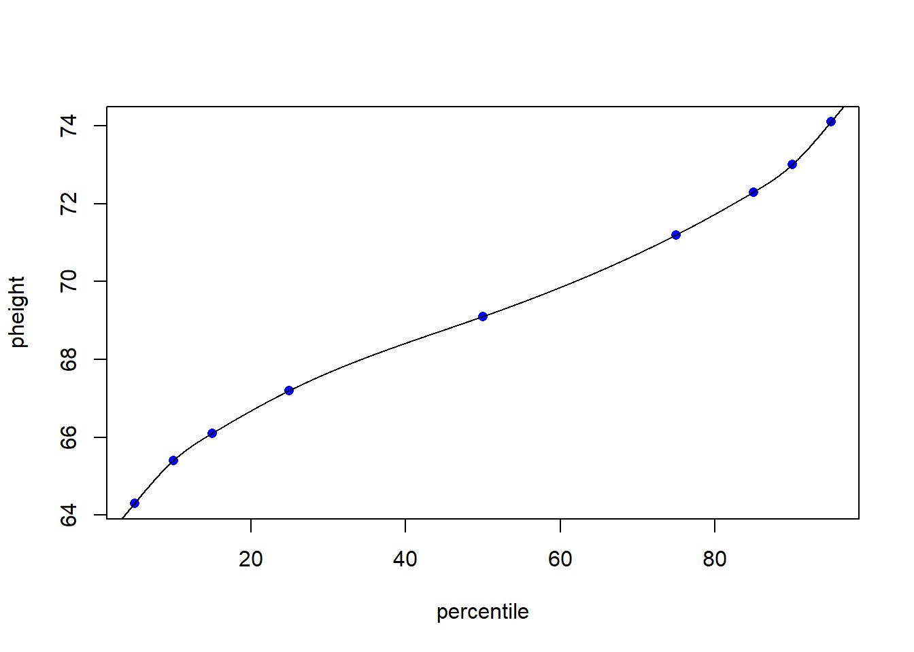
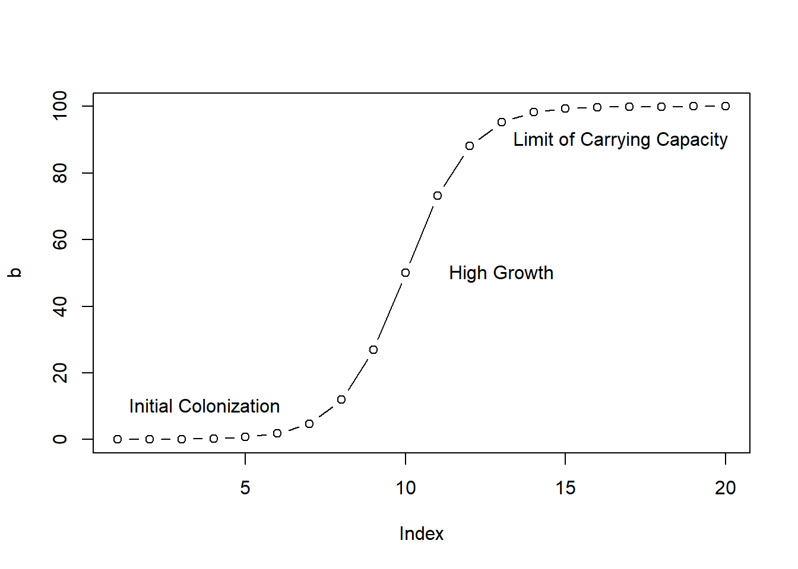
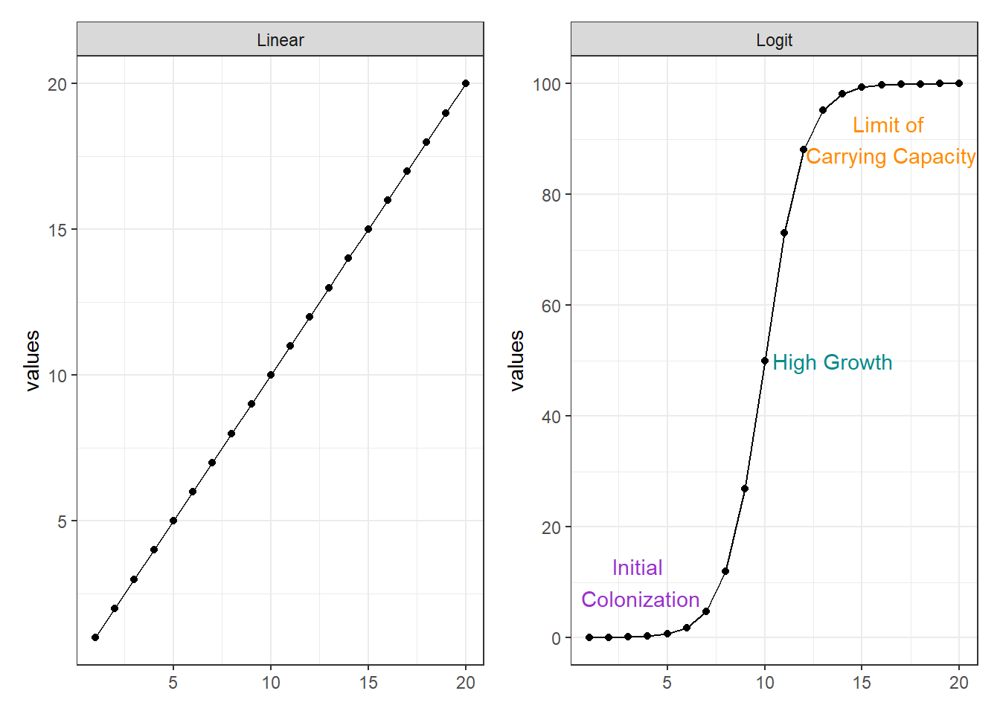
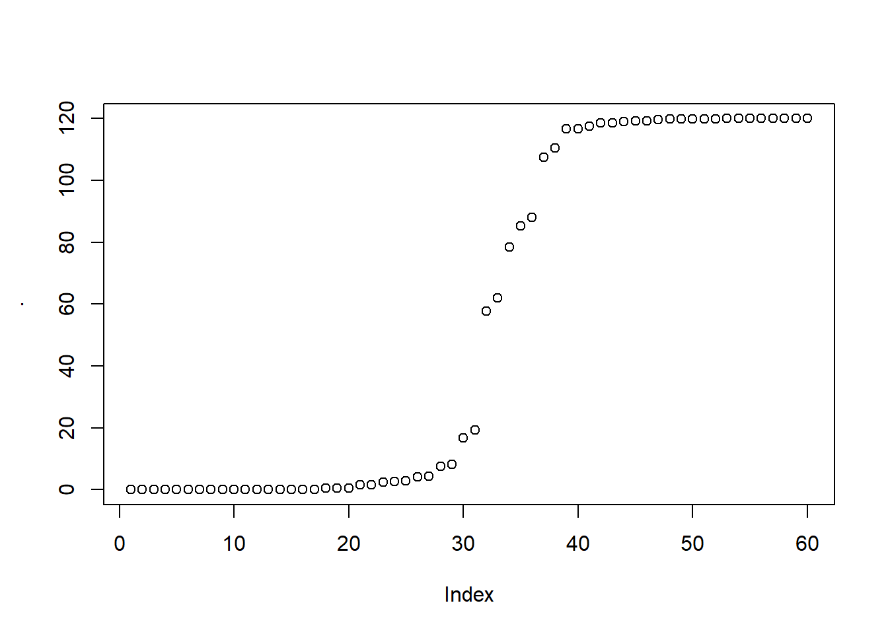
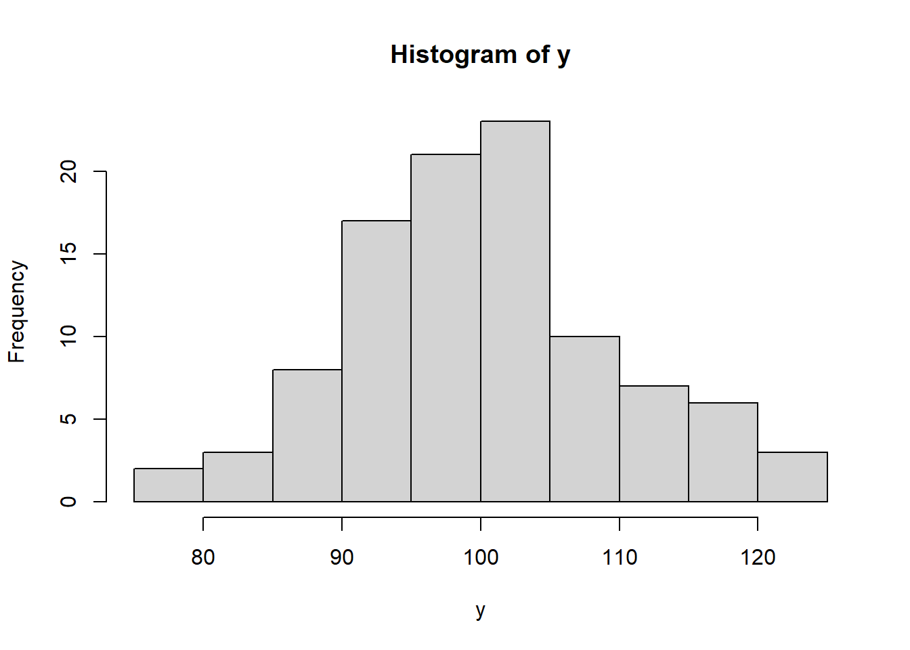

require(tidyverse)
require(patchwork)
theme_set(theme_bw(base_size = 11))10 Simulate Data
10.1 Overview
There are many reasons we might want to simulate data in R, and I find being able to simulate data to be incredibly useful in my day-to-day work. But how does someone get started simulating data?
R has several tools for generating and simulating data that can be useful for testing and teaching
10.2 Linear Sequences
Linear sequences of numbers are commonly used in R, notably for iterating through elements of data structures. For sequences of successive integers, the colon operator is usually the simplest choice. The result is all integers between the number before the colon and the number after the colon, inclusive. The sequence can be ascending or descending:
x = 1:10
x [1] 1 2 3 4 5 6 7 8 9 10x = -1:10
x [1] -1 0 1 2 3 4 5 6 7 8 9 10For sequences of real numbers or sequences that proceed in increments not equal to one use the seq function and specify the value of the three arguments as seq(from, to, by):
x = seq(10,100,10)
x [1] 10 20 30 40 50 60 70 80 90 100x = seq(-90,90,30)
x[1] -90 -60 -30 0 30 60 90For regular sequences of specific numbers the rep() (repeat) function can be used. The parameters are:
x: the value to repeat times: the number of times to repeat that value
x = rep(1,10)
x [1] 1 1 1 1 1 1 1 1 1 1rep(c("SE", "NE"), each = 5) [1] "SE" "SE" "SE" "SE" "SE" "NE" "NE" "NE" "NE" "NE"rep(c("SE", "NE"), times = 5) [1] "SE" "NE" "SE" "NE" "SE" "NE" "SE" "NE" "SE" "NE"10.3 Nonlinear Sequences
Linear sequences can be transformed to nonlinear sequences of numbers using a variety of functions. Some examples are given below.
10.3.1 Exponential and Logarithmic Sequences
Many phenomena, such as growth, follow exponential or logarithmic curves. Natural exponential and logarithms (powers and roots of Euler’s Number) are supported with the exp() and log() functions.
a = 1:10
b = exp(a)
b [1] 2.718282 7.389056 20.085537 54.598150 148.413159
[6] 403.428793 1096.633158 2980.957987 8103.083928 22026.465795| id | Linear | Exponential |
|---|---|---|
| 1 | 1 | 2.718282 |
| 2 | 2 | 7.389056 |
| 3 | 3 | 20.085537 |
| 4 | 4 | 54.598150 |
| 5 | 5 | 148.413159 |
| 6 | 6 | 403.428793 |
| 7 | 7 | 1096.633158 |
| 8 | 8 | 2980.957987 |
| 9 | 9 | 8103.083928 |
| 10 | 10 | 22026.465795 |

10.3.2 Logarithmic
a = 1:10
b = log(a)
b [1] 0.0000000 0.6931472 1.0986123 1.3862944 1.6094379 1.7917595 1.9459101
[8] 2.0794415 2.1972246 2.3025851| id | Linear | Logarithmic |
|---|---|---|
| 1 | 1 | 0.0000000 |
| 2 | 2 | 0.6931472 |
| 3 | 3 | 1.0986123 |
| 4 | 4 | 1.3862944 |
| 5 | 5 | 1.6094379 |
| 6 | 6 | 1.7917595 |
| 7 | 7 | 1.9459101 |
| 8 | 8 | 2.0794415 |
| 9 | 9 | 2.1972246 |
| 10 | 10 | 2.3025851 |

10.3.3 Exponential
Exponential sequences can be created based on any base using the carat operator ^:
a = 3
b = a^(0:10)
b [1] 1 3 9 27 81 243 729 2187 6561 19683 59049bt = tibble(b) %>% rename(data = 1) %>%
mutate(id = rep(0:10, times = 1))
bt %>%
ggplot(aes(x = id, y = data))+
geom_line() +
geom_point() +
scale_x_continuous(breaks = 1:10)+
scale_y_continuous(name = "values",breaks = scales::pretty_breaks(n = 10))+
theme(axis.title.x = element_blank())
10.3.4 Cyclical Sequences
Many phenomena such as temperature or market activity occur in regularly repeating cycles. The sin() and cos() functions can be used to create cyclical sequences. The parameter is in radians (multiples of 2π), and the native pi constant can be used to convert a linear sequence to radians:
a = seq(0, 6, length.out = 25)
b = sin(a * pi)
b [1] 0.000000e+00 7.071068e-01 1.000000e+00 7.071068e-01 1.224606e-16
[6] -7.071068e-01 -1.000000e+00 -7.071068e-01 -2.449213e-16 7.071068e-01
[11] 1.000000e+00 7.071068e-01 3.673819e-16 -7.071068e-01 -1.000000e+00
[16] -7.071068e-01 -4.898425e-16 7.071068e-01 1.000000e+00 7.071068e-01
[21] 6.123032e-16 -7.071068e-01 -1.000000e+00 -7.071068e-01 -7.347638e-16| id | Linear | Sinusoid |
|---|---|---|
| 1 | 0.00 | 0.000000e+00 |
| 2 | 0.25 | 7.071068e-01 |
| 3 | 0.50 | 1.000000e+00 |
| 4 | 0.75 | 7.071068e-01 |
| 5 | 1.00 | 1.224606e-16 |
| 6 | 1.25 | -7.071068e-01 |
| 7 | 1.50 | -1.000000e+00 |
| 8 | 1.75 | -7.071068e-01 |
| 9 | 2.00 | -2.449213e-16 |
| 10 | 2.25 | 7.071068e-01 |
| 11 | 2.50 | 1.000000e+00 |
| 12 | 2.75 | 7.071068e-01 |
| 13 | 3.00 | 3.673819e-16 |
| 14 | 3.25 | -7.071068e-01 |
| 15 | 3.50 | -1.000000e+00 |
| 16 | 3.75 | -7.071068e-01 |
| 17 | 4.00 | -4.898425e-16 |
| 18 | 4.25 | 7.071068e-01 |
| 19 | 4.50 | 1.000000e+00 |
| 20 | 4.75 | 7.071068e-01 |
| 21 | 5.00 | 6.123032e-16 |
| 22 | 5.25 | -7.071068e-01 |
| 23 | 5.50 | -1.000000e+00 |
| 24 | 5.75 | -7.071068e-01 |
| 25 | 6.00 | -7.347638e-16 |

10.4 Normally-Distributed Sequences
A normally distributed sequence of numbers can be created using the qnorm() quantile function. The parameters:
- x: A linear sequence of probabilities in the range 0 to 1
- mean: The mean (μ)
- sd: The standard deviation (σ)
10.4.1 qnorm
This function returns the value of the inverse cumulative density function (cdf) of the normal distribution given a certain random variable p, a population mean μ, and the population standard deviation σ
a = seq(0, 1, 0.02)
b = qnorm(p = a, mean = 2, sd = 1)
b [1] -Inf -0.05374891 0.24931393 0.44522641 0.59492844 0.71844843
[7] 0.82501321 0.91968066 1.00554212 1.08463491 1.15837877 1.22780679
[13] 1.29369744 1.35665459 1.41715849 1.47559949 1.53230120 1.58753687
[19] 1.64154121 1.69451921 1.74665290 1.79810652 1.84903078 1.89956628
[25] 1.94984642 2.00000000 2.05015358 2.10043372 2.15096922 2.20189348
[31] 2.25334710 2.30548079 2.35845879 2.41246313 2.46769880 2.52440051
[37] 2.58284151 2.64334541 2.70630256 2.77219321 2.84162123 2.91536509
[43] 2.99445788 3.08031934 3.17498679 3.28155157 3.40507156 3.55477359
[49] 3.75068607 4.05374891 Infat = tibble(a%>% as.numeric()) %>% rename(data = 1)
bt = tibble(b) %>% rename(data = 1)
binded = bind_rows(at,bt) %>%
mutate(id = rep(1:length(a), times = 2), mode = rep(c("seq", "qnorm"), each = length(a)))Warning: Removed 2 rows containing non-finite values (stat_bin).
10.4.2 rnorm
When we want to generate a vector of normally distributed random variables, we use rnorm function and supply it with length n, a population mean μ and population standard deviation σ.
- Example: In this example, with the use of the
rnorm()function we are generating a vector of 10 normally distributed random variables with mean temperature=25 and sd=2.
a = rnorm(n = 10, mean = 25, sd = 2)
a [1] 25.11446 27.24799 24.66387 26.26142 24.76491 21.62708 26.91647 27.38866
[9] 24.23348 25.1274810.4.3 runif
The runif() function generates random deviates of the uniform distribution when the minimum and maximum values are provided. The function is simply written as runif(n, min = 0, max = 1) . We may easily generate n number of random samples within any interval, defined by the min and the max argument.
- Example: In this example, with the use of the
runif()` function to generate a vector of 10 normally distributed random variables with minimum temperature of 23 and maximum temperature=28.
a = runif(10, min = 23, max = 28)
a [1] 25.09459 27.47837 27.65301 27.65820 25.79726 27.29496 24.75173 25.61296
[9] 26.14250 26.4684910.5 Sequences Based on Percentiles
You will occasionally find statistical data given as percentiles. For example, in this document the CDC gives the following percentiles for the height of men in the USA:
Percentile: 5 10 15 25 50 75 85 90 95
Height (in): 64.3 65.4 66.1 67.2 69.1 71.2 72.3 73.0 74.1This means that 5% of men are below 64.3 inches, 25% are below 67.2 inches, etc. By using a spline, it is possible to simulate a curve that fits those percentile points, then use the predict() function to create a representative sample. The CDC indicates that they based their estimates on 5,232 examined persons (sample size), which is what is simulated below:
# Table 12. Height in inches for males aged 20 and over and number of examined
# persons, mean, standard error of the mean, and selected percentiles, by race
# and Hispanic origin and age: United States, 2011–2014
pheight = c(64.3, 65.4, 66.1, 67.2, 69.1, 71.2, 72.3, 73.0, 74.1)
percentile = c(5, 10, 15, 25, 50, 75, 85, 90, 95)
# Create a spline to fit those points
spline = smooth.spline(percentile, pheight)
# Simulate 5,232 points that cover the range of percentiles
height = predict(spline, 100 * (1:5232) / 5233)
# Plot the simulated data
plot(percentile, pheight, col="blue", pch=16)
lines(height$x, height$y)
# Print the descriptive statistics
paste("mean = ", mean(height$y))[1] "mean = 69.1732940854836"paste("stdev =", sd(height$y))[1] "stdev = 2.82859108609513"paste("stderr =", sd(height$y) / sqrt(length(height$y)))[1] "stderr = 0.0391053611211175"10.6 Logistic Sequences
Phenomena like growth to the carrying capacity of an ecosystem follow a logistic curve, which can be generated using the self-starting logistic model function SSlogis(). The parameters are:
input: A linear sequenceAsym: The maximum output value (carrying capacity)xmid: The x value that is at the middle of the curvescal: The scaling (width) of the curve
a = 1:20
b = SSlogis(input = a, Asym = 100, xmid = 10, scal = 1)
b [1] 0.01233946 0.03353501 0.09110512 0.24726232 0.66928509 1.79862100
[7] 4.74258732 11.92029220 26.89414214 50.00000000 73.10585786 88.07970780
[13] 95.25741268 98.20137900 99.33071491 99.75273768 99.90889488 99.96646499
[19] 99.98766054 99.99546021plot(b, type="b")
text(1, 10, "Initial Colonization", pos=4)
text(11, 50, "High Growth", pos=4)
text(13, 90, "Limit of Carrying Capacity", pos=4)
| id | Linear | Logit |
|---|---|---|
| 1 | 1 | 0.01233946 |
| 2 | 2 | 0.03353501 |
| 3 | 3 | 0.09110512 |
| 4 | 4 | 0.24726232 |
| 5 | 5 | 0.66928509 |
| 6 | 6 | 1.79862100 |
| 7 | 7 | 4.74258732 |
| 8 | 8 | 11.92029220 |
| 9 | 9 | 26.89414214 |
| 10 | 10 | 50.00000000 |
| 11 | 11 | 73.10585786 |
| 12 | 12 | 88.07970780 |
| 13 | 13 | 95.25741268 |
| 14 | 14 | 98.20137900 |
| 15 | 15 | 99.33071491 |
| 16 | 16 | 99.75273768 |
| 17 | 17 | 99.90889488 |
| 18 | 18 | 99.96646499 |
| 19 | 19 | 99.98766054 |
| 20 | 20 | 99.99546021 |

set.seed(123)
a = rnorm(n = 60, mean = 44, sd = 20) %>% sort()
a = runif(n = 60, min = 20, max = 80) %>% sort()
SSlogis(input = a, Asym = 120, xmid = 50, scal = 2) %>% plot()
10.7 Random Sequences
An easy way to generate numeric data is to pull random numbers from some distribution. This can be done via the functions for generating random deviates. These functions always start with r (for “random”).
The basic distributions that I use the most for generating random numbers are the normal (rnorm()) and uniform (runif()) distributions.
There are many other distributions available as part of the stats package (e.g., binomial, F, log normal, beta, exponential, Gamma) and, as you can imagine, even more available in add-on packages. I recently needed to generate data from the Tweedie distribution to test a modeling tool, which I could do via package tweedie.
The r functions for a chosen distribution all work basically the same way. We define how many random numbers we want to generate in the first argument (n) and then define the parameters for the distribution we want to draw from. This is easier to see with practice, so let’s get started.
Random sequences of numbers are useful for testing analysis code, and are essential for formal statistical techniques like Monte Carlo methods.
Random sequences of numbers do not follow a regular pattern. While computers are deterministic machines that cannot generate truly random sequences of numbers, there are a variety of algorithms that generate pseudo-random sequences that are close enough to random to meet the needs of researchers.
10.7.1 Uniformly-Distributed Random Sequences
The most basic random number generating function is the runif() function, which generates a random sequence in a uniform distribution (the unif part of the name). The parameters:
n: The count of numbers to generate
min: The minimum possible value in the sequence (defaults to 0)
max: The maximum possible value in the sequence (defaults to 1)
Example: Generate sequence of nile perch that has minimum value of 20 and maximum value of 120
a = runif(n = 10, min = 20, max = 80) %>% sort()
a [1] 35.90107 35.90196 38.74689 48.87739 53.87543 55.66059 62.49742 70.38607
[9] 74.11246 74.79129Note that the runif function help us when want to simulate sample when a minimum and maximum value of that population is given.
10.7.2 Normally-Distributed Random Sequences
I use rnorm() a lot, sometimes with good reason and other times when I need some numbers and I really don’t care too much about what they are.
There are three arguments to rnorm(). From the Usage section of the documentation:
rnorm(n, mean = 0, sd = 1)
The n argument is the number of observations we want to generate. The mean and sd arguments show what the default values of the parameters are (note that sd is the standard deviation, not the variance). Not all r functions have defaults to the parameter arguments like this.
To get 10 random numbers from a normal distribution we can write code like:
a = rnorm(n = 10, mean = 55,sd = 8)
a [1] 50.19792 72.49866 67.26089 53.11440 46.78863 49.31675 57.05507 53.02646
[9] 52.21966 47.38705You notes that the `rnorm`` function help us to simulate sample when a statistic parameter mean and standard deviation of that population is given.
10.7.3 Setting the random seed for reproducible random numbers
Second, if we run this code again we’ll get different numbers.
a = rnorm(n = 10, mean = 55,sd = 8)
a [1] 54.63978 48.72076 41.65646 51.95819 62.35197 50.39722 59.86371 42.05694
[9] 54.55550 59.15526To get reproducible random numbers we need to set the seed via set.seed().
Making sure someone else will be able to exactly reproduce your results when running the same code can be desirable in teaching. It is also is useful when making an example dataset to demonstrate a coding issue, like if you were asking a code question on Stack Overflow.
You’ll also see me set the seed when I’m making a function for a simulation and I want to make sure it works correctly. Otherwise in most simulations we don’t actually want or need to set the seed.
set.seed(123)
a = rnorm(n = 10, mean = 55,sd = 8)
a [1] 50.51619 53.15858 67.46967 55.56407 56.03430 68.72052 58.68733 44.87951
[9] 49.50518 51.4347010.8 Discrete counts with rpois()
Let’s look at one last function for generating random numbers, this time for generating discrete integers (including 0) from a Poisson distribution with rpois().
I use rpois() for generating counts for creating data to be fit with generalized linear models. This function has also helped me gain a better understanding of the shape of Poisson distributions with different means.
The Poisson distribution is a single parameter distribution. The function looks like:
rpois(n, lambda)
The single parameter argument, lambda, is the mean. It has no default setting so must always be defined by the user.
Let’s generate five values from a Poisson distribution with a mean of 2.5. Note that mean of the Poisson distribution can be any non-negative value (i.e., it doesn’t have to be an integer) even though the observed values will be discrete integers.
rpois(n = 5, lambda = 2.5)[1] 4 3 3 7 3Example of using the simulated numbers from rpois() Let’s explore the Poisson distribution a little more, seeing how the distribution changes when the mean of the distribution changes. Being able to look at how the Poisson distribution changes with the mean via simulation helped me understand the distribution better, including why it so often does a poor job modeling ecological count data.
We’ll draw 100 values from a Poisson distribution with a mean of 5. We’ll name this vector y and take a look at a summary of those values.
y = rpois(100, lambda = 5)The vector of values we simulated here fall between 1 and 11.
summary(y) Min. 1st Qu. Median Mean 3rd Qu. Max.
0.00 3.00 5.00 4.87 6.00 10.00 hist(y)
Let’s do the same thing for a Poisson distribution with a mean of 100. The range of values is pretty narrow; there are no values even remotely close to 0.
y = rpois(100, lambda = 100)
summary(y) Min. 1st Qu. Median Mean 3rd Qu. Max.
76.00 94.75 100.00 100.62 106.00 123.00 hist(y)
An alternative to the Poisson distribution for discrete integers is the negative binomial distribution. Packages MASS has a function called rnegbin() for random number generation from the negative binomial distribution.
10.9 Generate character vectors with rep()
Quantitative variables are great, but in simulations we’re often going to need categorical variables, as well.
In my own work these are usually sort of “grouping” or “treatment” variable, with multiple individuals/observations per group/treatment. This means I need to have repetitions of each character value. The rep() function is one way to avoid having to write out an entire vector manually. It’s for replicating elements of vectors and lists.
10.9.1 Using letters and LETTERS
The first argument of rep() is the vector to be repeated. One option is to write out the character vector you want to repeat. You can also get a simple character vector through the use of letters or LETTERS. These are built in constants in R. letters is the 26 lowercase letters of the Roman alphabet and LETTERS is the 26 uppercase letters.
Letters can be pulled out via the extract brackets ([). I use these built-in constants for pure convenience when I need to make a basic categorical vector and it doesn’t matter what form those categories take. I find it more straightforward to type out the word and brackets than a vector of characters (complete with all those pesky quotes and such 😆).
Here’s the first two letters.
letters[1:2][1] "a" "b"And the last 17 LETTERS.
LETTERS[10:26] [1] "J" "K" "L" "M" "N" "O" "P" "Q" "R" "S" "T" "U" "V" "W" "X" "Y" "Z"10.9.2 Repeat each element of a vector with each
There are three arguments that help us repeat the values in the vector in rep() with different patterns: each, times, and length.out. These can be used individually or in combination.
With each we repeat each unique character in the vector the defined number of times. The replication is done “elementwise”, so the repeats of each unique character are all in a row.
Let’s repeat two characters three times each. The resulting vector is 6 observations long.
This is an example of how I might make a grouping variable for simulating data to be used in a two-sample analysis.
rep(letters[1:2], each = 3)[1] "a" "a" "a" "b" "b" "b"10.9.3 Repeat a whole vector with the times argument
The times argument can be used when we want to repeat the whole vector rather than repeating it elementwise.
We’ll make a two-group variable again, but this time we’ll change the repeating pattern of the values in the variable.
rep(letters[1:2], times = 3)[1] "a" "b" "a" "b" "a" "b"10.9.4 Set the output vector length with the length.out argument
The length.out argument has rep() repeat the whole vector. However, it repeats the vector only until the defined length is reached. Using length.out is another way to get unbalanced groups.
Rather than defining the number of repeats like we did with each and times we define the length of the output vector.
Here we’ll make a two-group variable of length 5. This means the second group will have one less value than the first.
rep(letters[1:2], length.out = 5)[1] "a" "b" "a" "b" "a"10.9.5 Repeat each element a different number of times
Unlike each and length.out, we can use times with a vector of values. This allows us to repeat each element of the character vector a different number of times. This is one way to simulate unbalanced groups.
Using times with a vector repeats each element like each does. I found this a little confusing as it makes it harder to remember which argument repeats “elementwise” and which “vectorwise”. But length.out always repeats “vectorwise”, so that’s something.
Let’s repeat the first element twice and the second four times.
rep(letters[1:2], times = c(2, 4) )[1] "a" "a" "b" "b" "b" "b"10.9.6 Combining each with times
As your simulation situation get more complicated, like if you are simulating data from a blocked design or with multiple sizes of experimental units, you may need more complicated patterns for your categorical variable. The each argument can be combined with times to first repeat each value elementwise (via each) and then repeat that whole pattern (via times).
When using times this way it will only take a single value and not a vector.
Let’s repeat each value twice, 3 times.
rep(letters[1:2], each = 2, times = 3) [1] "a" "a" "b" "b" "a" "a" "b" "b" "a" "a" "b" "b"10.9.7 Combining each with length.out
Similarly we can use each with length.out. This can lead to some imbalance.
Here we’ll repeat the two values twice each and then repeat that pattern until we hit a total final vector length of 7.
rep(letters[1:2], each = 2, length.out = 7)[1] "a" "a" "b" "b" "a" "a" "b"Note you can’t use length.out and times together (if you try, length.out will be given priority and times ignored).
10.9.8 Creating datasets with quantiative and categorical variables
We now have some tools for creating quantitative data as well as categorical. Which means it’s time to make some datasets! We’ll create several simple ones to get the general idea.
10.10 Simulate data with no differences among two groups
Let’s start by simulating data that we would use in a simple two-sample analysis with no difference between groups. We’ll make a total of 6 observations, three in each group.
We’ll be using the tools we reviewed above but will now name the output and combine them into a data.frame. This last step isn’t always necessary, but can help you keep things organized.
First we’ll make separate vectors for the continuous and categorical data and then bind them together via data.frame().
Notice there is no need to use cbind() here, which is commonly done by R beginners (I know I did!). Instead we can use data.frame() directly.
group = rep(letters[1:2], each = 3)
response = rnorm(n = 6, mean = 0, sd = 1)
data.frame(group, response) group response
1 a -0.49929202
2 a 0.21444531
3 a -0.32468591
4 b 0.09458353
5 b -0.89536336
6 b -1.31080153When I make a data.frame like this I prefer to make my vectors and the data.frame simultaneously to avoid having a lot of variables cluttering up my R Environment.
I often teach/blog with all the steps clearly delineated as I think it’s easier when you are starting out, so (as always) use the method that works for you.
data.frame(group = rep(letters[1:2], each = 3),
response = rnorm(n = 6, mean = 0, sd = 1) ) group response
1 a 1.9972134
2 a 0.6007088
3 a -1.2512714
4 b -0.6111659
5 b -1.1854801
6 b 2.1988103Now let’s add another categorical variable to this dataset.
Say we are in a situation involving two factors, not one. We have a single observations for every combination of the two factors (i.e., the two factors are crossed).
The second factor, which we’ll call factor, will take on the values “C”, “D”, and “E”.
LETTERS[3:5][1] "C" "D" "E"We need to repeat the values in a way that every combination of group and factor is present in the dataset exactly one time.
Remember the group factor is repeated elementwise.
rep(letters[1:2], each = 3)[1] "a" "a" "a" "b" "b" "b"We need to repeat the three values twice. But what argument do we use in rep() to do so?
rep(LETTERS[3:5], ?)Does each work?
rep(LETTERS[3:5], each = 2)[1] "C" "C" "D" "D" "E" "E"No, if we use each then each element is repeated twice and some of the combinations of group and the new variable will be missing.
This is a job for the times or length.out arguments, so the whole vector is repeated. We can repeat the whole vector twice using times, or via length.out = 6. I decided to do the former.
In the result below we can see every combination of the two factors is present once.
data.frame(group = rep(letters[1:2], each = 3),
factor = rep(LETTERS[3:5], times = 2),
response = rnorm(n = 6, mean = 0, sd = 1) ) group factor response
1 a C 1.3124130
2 a D -0.2651451
3 a E 0.5431941
4 b C -0.4143399
5 b D -0.4762469
6 b E -0.788602810.11 Simulate data with a difference among groups
The dataset above is one with “no difference” among groups. What if we want data where the means are different between groups? Let’s make two groups of three observations where the mean of one group is 5 and the other is 10. The two groups have a shared variance (and so standard deviation) of 1.
Remembering how rnorm() works with a vector of means is key here. The function draws iteratively from each distribution.
response = rnorm(n = 6, mean = c(5,10), sd = 1)
response[1] 4.405383 11.650907 4.945972 10.119245 5.243687 11.232476How do we get the group pattern correct?
group = rep(letters[1:2], ?)We need to repeat the whole vector three times instead of elementwise.
To get the groups in the correct order we need to use times or length.out in rep(). With length.out we define the output length of the vector, which is 6. Alternatively we could use times = 3 to repeat the whole vector 3 times.
group = rep(letters[1:2], length.out = 6)These can then be combined into a data.frame. Working out this process is another reason why sometimes we build each vector separately prior to combining them into a data.frame.
data.frame(group, response) group response
1 a 4.405383
2 b 11.650907
3 a 4.945972
4 b 10.119245
5 a 5.243687
6 b 11.23247610.12 Multiple quantitative variables with groups
For our last dataset we’ll have two groups, with 10 observations per group.
rep(LETTERS[3:4], each = 10) [1] "C" "C" "C" "C" "C" "C" "C" "C" "C" "C" "D" "D" "D" "D" "D" "D" "D" "D" "D"
[20] "D"Let’s make a dataset that has two quantitative variables, unrelated to both each other and the groups. One variable ranges from 10 and 15 and one from 100 and 150.
How many observations should we draw from each uniform distribution?
runif(n = ?, min = 10, max = 15)We had 2 groups with 10 observations each and 2*10 = 20. So we need to use n = 20 in runif().
Here is the dataset made in a single step.
data.frame(group = rep(LETTERS[3:4], each = 10),
x = runif(n = 20, min = 10, max = 15),
y = runif(n = 20, min = 100, max = 150)) group x y
1 C 11.51452 138.0200
2 C 11.94102 107.3542
3 C 10.80238 117.9028
4 C 14.31276 133.6666
5 C 14.76551 126.1911
6 C 12.81822 117.4901
7 C 11.64774 112.0265
8 C 14.98309 102.9096
9 C 11.17410 111.8310
10 C 13.06336 144.5039
11 D 10.54089 140.5914
12 D 12.43516 137.3758
13 D 10.49723 107.7456
14 D 10.80583 106.2371
15 D 11.41496 148.7363
16 D 12.91936 121.8065
17 D 13.65854 123.2008
18 D 10.82760 108.2649
19 D 14.33234 129.2468
20 D 13.54287 113.5389What happens if we get the number wrong? If we’re lucky we get an error that will help us troubleshoot the problem.
data.frame(group = rep(LETTERS[3:4], each = 10),
x = runif(n = 15, min = 10, max = 15),
y = runif(n = 15, min = 100, max = 150))But if we get things wrong and the number we use happens to go into the number we need evenly, R will recycle the vector to the end of the data.frame().
This is a hard mistake to catch. If you look carefully through the output below you can see that the continuous variables start to repeat on line 10 because I used n = 10 instead of n = 20.
data.frame(group = rep(LETTERS[3:4], each = 10),
x = runif(n = 10, min = 10, max = 15),
y = runif(n = 10, min = 100, max = 150)) group x y
1 C 11.15048 131.3573
2 C 13.45604 100.0233
3 C 11.41426 110.8622
4 C 14.05199 135.2436
5 C 10.46958 110.7583
6 C 14.11015 140.6967
7 C 12.13714 115.3882
8 C 13.77944 134.3871
9 C 13.31193 146.6341
10 C 12.22264 105.7890
11 D 11.15048 131.3573
12 D 13.45604 100.0233
13 D 11.41426 110.8622
14 D 14.05199 135.2436
15 D 10.46958 110.7583
16 D 14.11015 140.6967
17 D 12.13714 115.3882
18 D 13.77944 134.3871
19 D 13.31193 146.6341
20 D 12.22264 105.789010.13 Repeatedly simulate data with replicate()
The replicate() function is a real workhorse when making repeated simulations. It is a member of the apply family in R, and is specifically made (per the documentation) for the repeated evaluation of an expression (which will usually involve random number generation).
We want to repeatedly simulate data that involves random number generation, so that sounds like a useful tool.
The replicate() function takes three arguments:
n, which is the number of replications to perform. This is to set the number of repeated runs we want. expr, the expression that should be run repeatedly. This is often a function. simplify, which controls the type of output the results of expr are saved into. Use simplify = FALSE to get output saved into a list instead of in an array.
10.13.1 Simple example of replicate()
Let’s say we want to simulate some values from a normal distribution, which we can do using the rnorm() function as above. But now instead of drawing some number of values from a distribution one time we want to do it many times. This could be something we’d do when demonstrating the central limit theorem, for example.
Doing the random number generation many times is where replicate() comes in. It allows us to run the function in expr exactly n times.
Here I’ll generate 5 values from a standard normal distribution three times. Notice the addition of simplify = FALSE to get a list as output.
The output below is a list of three vectors. Each vector is from a unique run of the function, so contains five random numbers drawn from the normal distribution with a mean of 0 and standard deviation of 1.
set.seed(16)
replicate(n = 3,
expr = rnorm(n = 5, mean = 0, sd = 1),
simplify = FALSE )[[1]]
[1] 0.4764134 -0.1253800 1.0962162 -1.4442290 1.1478293
[[2]]
[1] -0.46841204 -1.00595059 0.06356268 1.02497260 0.57314202
[[3]]
[1] 1.8471821 0.1119334 -0.7460373 1.6582137 0.7217206Note if I don’t use simplify = FALSE I will get a matrix of values instead of a list. Each column in the matrix is the output from one run of the function.
In this case there will be three columns in the output, one for each run, and 5 rows. This can be a useful output type for some simulations. I focus on list output throughout the rest of this post only because that’s what I have been using recently for simulations.
set.seed(16)
replicate(n = 3,
expr = rnorm(n = 5, mean = 0, sd = 1) ) [,1] [,2] [,3]
[1,] 0.4764134 -0.46841204 1.8471821
[2,] -0.1253800 -1.00595059 0.1119334
[3,] 1.0962162 0.06356268 -0.7460373
[4,] -1.4442290 1.02497260 1.6582137
[5,] 1.1478293 0.57314202 0.721720610.13.2 An equivalent for() loop example
A for() loop can be used in place of replicate() for simulations. With time and practice I’ve found replicate() to be much more convenient in terms of writing the code. However, in my experience some folks find for() loops intuitive when they are starting out in R. I think it’s because for() loops are more explicit on the looping process: the user can see the values that i takes and the output for each i iteration is saved into the output object because the code is written out explicitly.
In my example I’ll save the output of each iteration of the loop into a list called list1. I initialize this as an empty list prior to starting the loop. To match what I did with replicate() I do three iterations of the loop (i in 1:3), drawing 5 values via rnorm() each time.
The result is identical to my replicate() code above. It took a little more code to do it but the process is very clear since it is explicitly written out.
set.seed(16)
list1 = list() # Make an empty list to save output in
for (i in 1:3) { # Indicate number of iterations with "i"
list1[[i]] = rnorm(n = 5, mean = 0, sd = 1) # Save output in list for each iteration
}
list1[[1]]
[1] 0.4764134 -0.1253800 1.0962162 -1.4442290 1.1478293
[[2]]
[1] -0.46841204 -1.00595059 0.06356268 1.02497260 0.57314202
[[3]]
[1] 1.8471821 0.1119334 -0.7460373 1.6582137 0.721720610.13.3 Using replicate() to repeatedly make a dataset
Earlier we were making datasets with random numbers and some grouping variables. Our code looked like:
data.frame(group = rep(letters[1:2], each = 3),
response = rnorm(n = 6, mean = 0, sd = 1) ) group response
1 a -1.6630805
2 a 0.5759095
3 a 0.4727601
4 b -0.5427317
5 b 1.1276871
6 b -1.6477976We could put this process as the expr argument in replicate() to get many simulated datasets. I would do something like this if I wanted to compare the long-run performance of two different statistical tools using the exact same random datasets.
I’ll replicate things 3 times again to easily see the output. I still use simplify = FALSE to get things into a list.
simlist = replicate(n = 3,
expr = data.frame(group = rep(letters[1:2], each = 3),
response = rnorm(n = 6, mean = 0, sd = 1) ),
simplify = FALSE)We can see this result is a list of three data.frames.
str(simlist)List of 3
$ :'data.frame': 6 obs. of 2 variables:
..$ group : chr [1:6] "a" "a" "a" "b" ...
..$ response: num [1:6] -0.314 -0.183 1.47 -0.866 1.527 ...
$ :'data.frame': 6 obs. of 2 variables:
..$ group : chr [1:6] "a" "a" "a" "b" ...
..$ response: num [1:6] 1.03 0.84 0.217 -0.673 0.133 ...
$ :'data.frame': 6 obs. of 2 variables:
..$ group : chr [1:6] "a" "a" "a" "b" ...
..$ response: num [1:6] -0.943 -1.022 0.281 0.545 0.131 ...simlist[[1]] group response
1 a -0.3141739
2 a -0.1826816
3 a 1.4704785
4 b -0.8658988
5 b 1.5274670
6 b 1.0541781